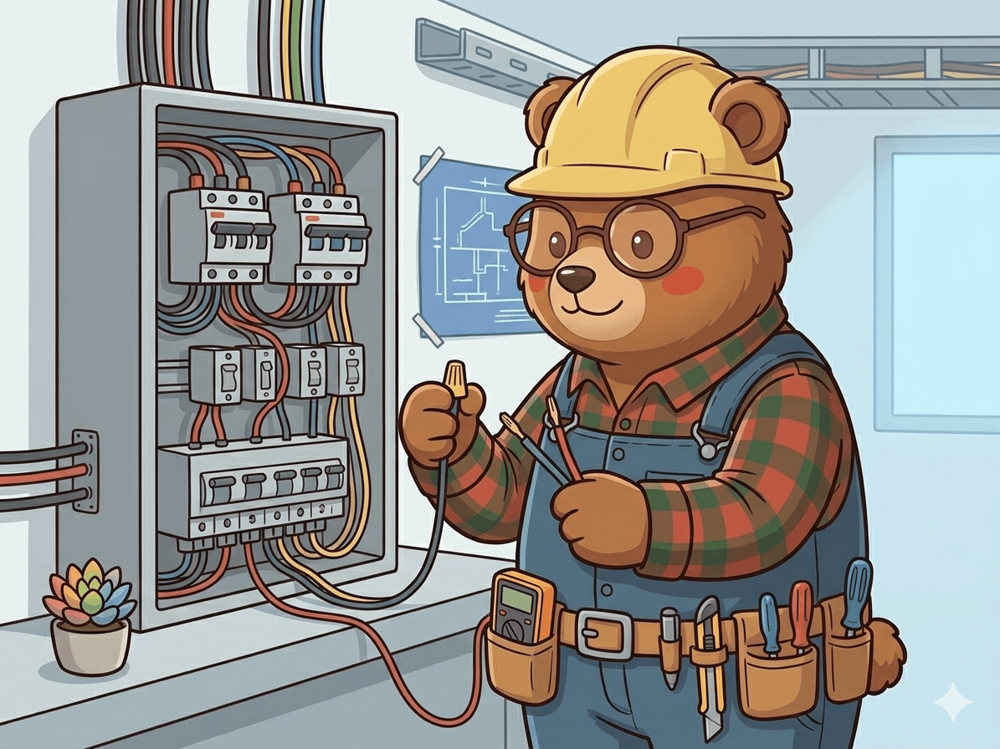
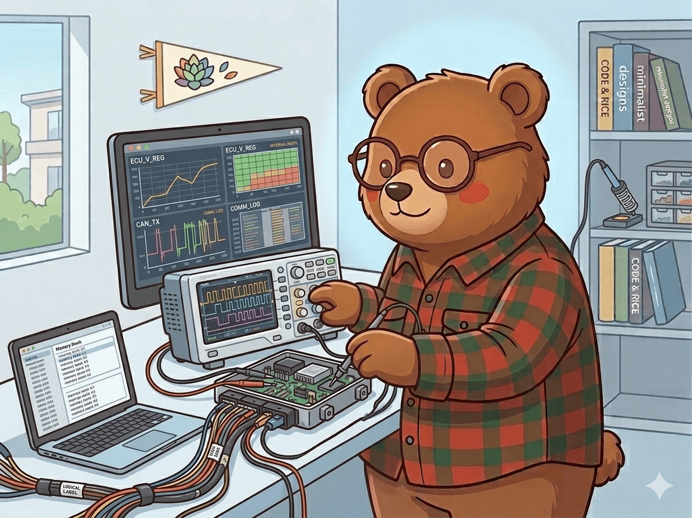
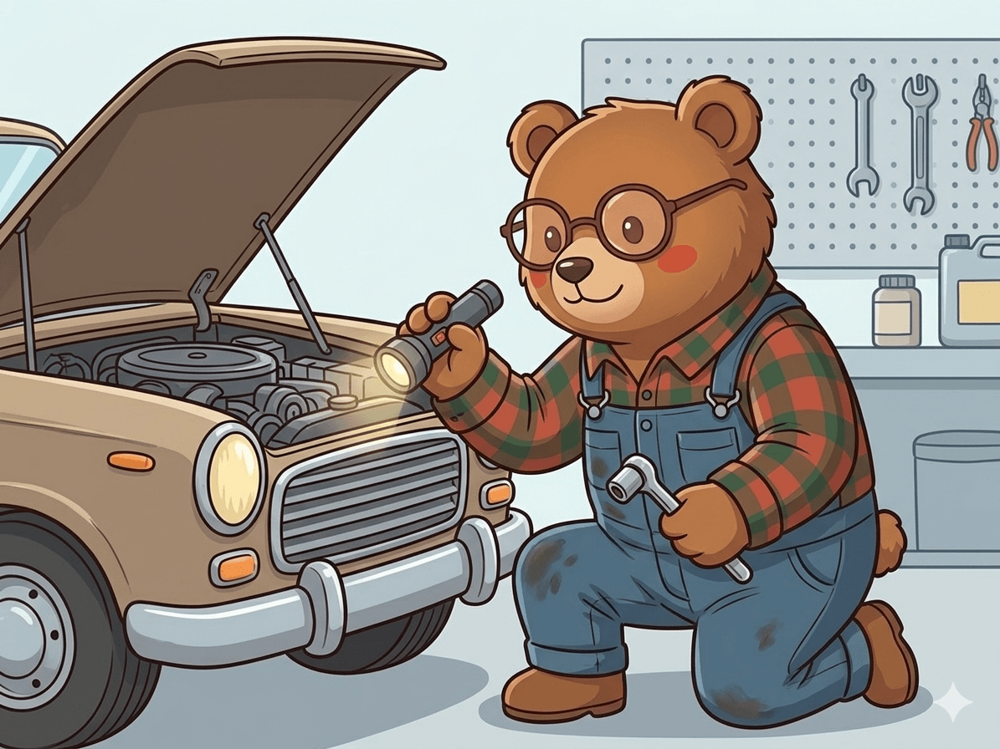
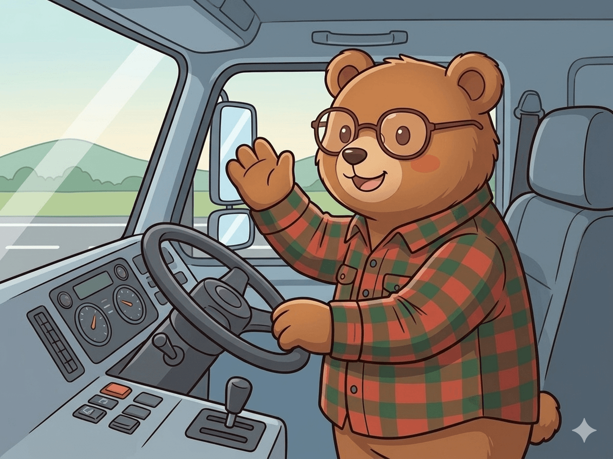
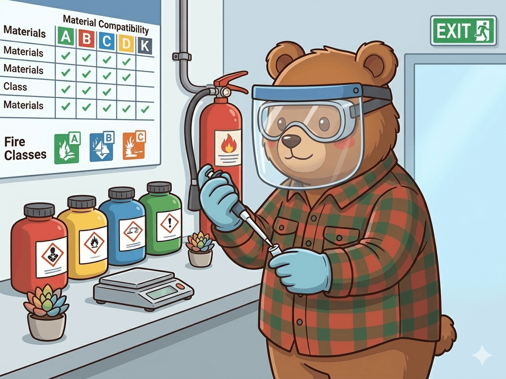
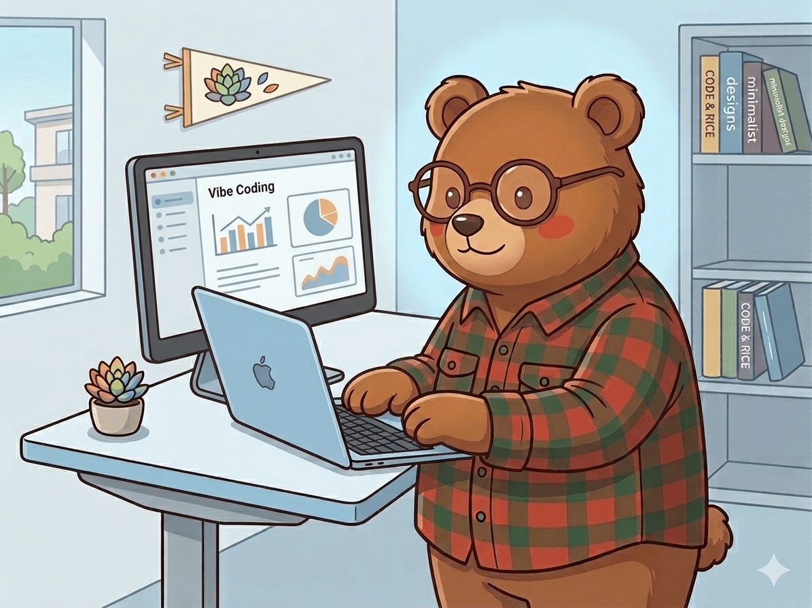
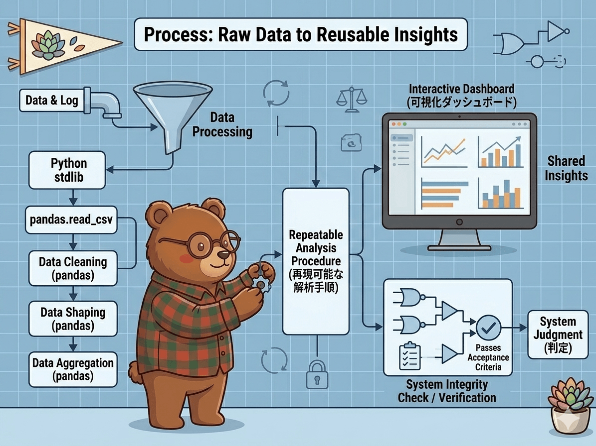
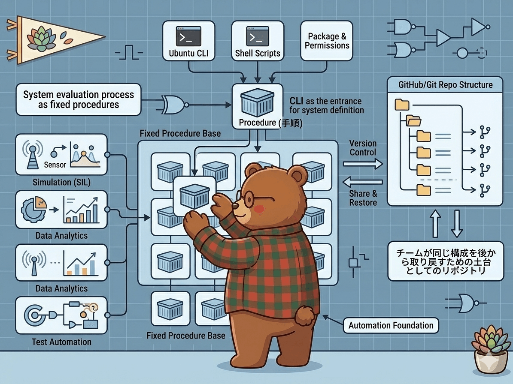

現場の風と、論理の調和。
ひとつひとつを丁寧に、楽しみながら追求する。
このページでは、仕事観、スキルと考え方、制作物を順にまとめています。学びの更新は、下の X 欄からもご覧いただけます。
Profile
KumaTrekCode
ハードの事象を、ソフトの力で数値化する。
実機評価という「ハード」の現場で起きる事象を、プログラミングという「ソフト」の力で正確に数値化し、開発のスピードと品質に寄与することを目指しています。
試験の企画から現場での実施までを段取りよく進め、計測で得た事実にもとづいて結論の説明まで責任を持ついまの立場として、現場と仕様のあいだを正しくつなぐテストエンジニアでありたいと考えています。
Introduction
役割と、大切にしている姿勢
- 納得感と完遂力 — 仕組みを分解して本質を理解し、自分の中で納得できるテーマでは、不要な寄り道をせず集中して取り組みます。計画した手順は「抜け道」を作らず着実に進め、最後まで責任を持ってやり遂げるのが私のスタイルです。
- 事実に基づく実機評価 — 現在は実機評価を中心に、評価対象の通信やECU内部値の計測から良否判定までを担っています。仕様とログの双方から「なぜこの結論に至ったか」を誰もが納得できる形で言語化することを大切にしています。
- 現場経験 × デジタルの視点 — 長年の実機計測で培った感覚を土台に、プログラミング学習で得た論理的な構造化スキルを掛け合わせる。現在は、学習した内容を少しずつ実務に還元し、計測データの整理や自動化を通じて、評価プロセスの精度を高める試みを始めています。
Values
大切にしていること
- Minimalism — 思考と身の回りを単純に保ち、優先度の高いことに時間と集中を使う。
- Logical clarity — 前提と結論をはっきりさせ、測定できる事実や記録で説明し合う。
- Interests — 国内旅行。47都道府県を踏破するのを目標にしています。
保有スキル
資格・免許と、実務での実機計測・評価を、いまの自分の軸として整理しています。
-

電気工事士
第２種電気工事士。制御回路・電源まわりの安全と規格の素地
-

ECU計測
評価対象の通信や ECU 内部値の取得・整理を行い、実機評価における良否判定の根拠づくりに使っています。
-

自動車整備士
二級自動車整備士。機構と故障の因果を追うときの基礎体力
-

大型運転
大型自動車免許。重量物・長尺の扱いと、実機の挙動への感覚の土台
-

危険物取扱
危険物取扱者 第1〜6類。化学品の性質と保管・運用上のリスク意識
今後取得・強化したいスキル
Web・データ処理・Linux を通して、実機評価で得た知見を速く・正確に・説明しやすく還元するために、いま伸ばしている分野です。
-

Web 開発
HTML / CSS / JavaScript。評価レポートや計測用ツールの UI を、見た人がすぐ状況を把握できる形にまとめる力をつけたい。
-

データ処理・自動化
Python、pandas、可視化。計測ログや ECU 内部値の整形・解析をスクリプト化し、同じ手順で繰り返せる形にして良否の説明までつなげたい。
-

開発・計測環境（Linux）
Ubuntu、シェル、Git。計測と解析を同じ環境で再現できる土台にし、後から同じ構成を取り戻せるようにしたい。
Portfolio
トップ・About・各制作物の説明ページを含むこのサイト全体も、HTML / CSS で組んだ静的なポートフォリオです。GitHub Pages で公開しており、このサイト自体が Web 制作の能力を示すひとつの成果になるようにしています。業務とは切り分けた学習・アウトプットの置き場でもあります。
制作物としてメインで載せているのは、デイトラの卒業課題として取り組んだカフェサイト「Open cafe」の静的コーディング版です。課題の要件に沿って完走したうえでここに載せており、概要・使用技術・プレビューは次のページにまとめています。
目指している姿
長期的なゴール
- ハードとソフト、両輪を回せるテストエンジニア — 実機の挙動（ハード）を踏まえ、計測データの整理・解析に自らのコードを組み込み、必要に応じてシミュレーション評価まで設計・実行できるようにし、試験の計画から現場の良否判定までをひと続きの責任で引き受けられるテストエンジニアを、次の段階の目標にしています。
- 上流と現場を繋ぐ役割 — シミュレーション上の理論と、現場で起きている事実。その両方を等しく語り、評価の前提と結果を一枚にそろえられる専門性を磨くことで、開発全体のスムーズな進行に貢献できる存在でありたいと考えています。